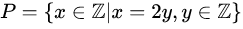

Como saber se um número é par de forma complicada - III
Uma coletânea sobre diversas formas de descobrir se um número é par ou não em Go, III

https://pt.wikipedia.org/wiki/Paridade
Parte III, agora temos um problema!
No artigo anterior, dediquei-me apenas à solução que achei mais interessante, mais inusitada, mais criativa, vale uma conferida.
Se não acompanhou, veja o primeiro artigo, com algumas formas divertidas de saber se um número é par.
Hoje, uma proposta que funciona bem em linguagens interpretadas que cuidam dos detalhes sórdidos dos números, mas não numa linguagem em que o programador é responsável por isso.
Baseado no cosseno (@selfawaresoup)
Uma solução simples. Se cos(n*PI) > 0, o número é par. Fui todo feliz e faceiro preparar mais essa solução para o primeiro texto dessa série nesse renomado blog, e falhei miseravelmente!
Para números grandes (ou muito pequenos, considerando-se os negativos), a resposta de minha função era errada. Pior, ao debugar, calculando manualmente no bc o valor e comparando com o gerado pelo meu programa, nada batia. Estava eu diante de um erro do Go?
Evidente que não! Mas demorei muito pra entender.
Eis o original:
package main
import (
"math"
"github.com/paulohrpinheiro/mytest"
)
func isEven(n int) bool {
if math.Cos(float64(n)*math.Pi) > 0.0 {
return true
}
return false
}
func main() {
mytest.Run(1000, isEven)
}
E sua saída, vejam que nada deu certo:
Memórias
Deixei pra lá. Publiquei as primeiras formas, a segunda, e fiquei com um backlog reduzido, mas não excluí essa problemática solução.
Depois de alguns dias, voltei a esse problema. Comecei a imprimir mais coisas. Ficava olhando para aqueles números em ponto flutuante de 64 bits em sua representação..
Ah! Óbvio!
Perda de precisão, como pude esquecer disso...
Dei uma olhadinha no padrão ieee754 para certificar-me disso, e também no fonte da GLIBC, pra confirmar, e são, somando, 52 bits de precisão (ajuntando os campos mantissa0 e mantissa1).
Aliviado
Com uma explicação, encontrei a paz, e a lembrança do que é aritmética em ponto flutuante. Agora sei dos limites em que posso atuar:
package main
import (
"fmt"
"math"
"github.com/paulohrpinheiro/mytest"
)
func isEven(n int) bool {
if math.Cos(float64(n)*math.Pi) > 0.0 {
return true
}
return false
}
func printResults(t string, n []int) {
fmt.Println("===>", t)
for _, x := range n {
fmt.Println(x, float64(x), "is even? ", isEven(x))
}
fmt.Println()
}
func main() {
limit := 1 << 52
posLimit := 1 << 53
printResults("Normal", []int{10, 0, -129, -43129791})
printResults("Limit", []int{limit, limit + 1})
printResults("Pos limit", []int{posLimit, posLimit + 1})
fmt.Println("===> myTest:")
mytest.Run(1000, isEven)
}
Dito tudo isso, ressalto que estou na segurança de meu x86_64, com código nada portável, nada seguro, apenas suficiente para me tirar as terríveis dúvidas em que estava metido.